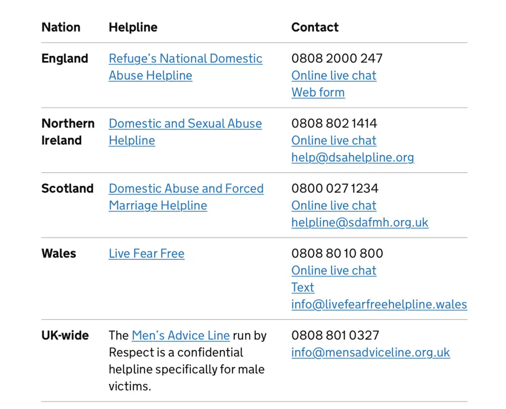

AWDPI亚裔女性国际发展计划致力为遭受家庭暴力威胁的海外华侨华人女性提供充分、持续的保护和支持，包括语言支持、心理支持、法律支持、社群支持、海外救助网络支持、采写发声支持等。
2024年妇女月，我们完成了6国反家暴普法手册的整理工作。该手册基于荷兰、比利时、英国、法国、德国、美国的相关法律文献，围绕各国对于家暴行为的认定、处罚、救济等问题进行了汇总整理。
*本推文为“六国反家暴普法手册-英国篇”，更多普法手册内容请进入公众号主页查看：
阅前提示：法律法规可能随时更新，本手册不能作为唯一参考标准
英国反家暴普法手册
妇女月特别推送 | 六国反家暴普法手册 - 英国篇
目录 CONTENT
一、法律框架介绍
1. 妇女权益相关的综合性法律
2. 人身保护令
3. 婚姻
二、您或者您关心的人是否处于家暴之中？
1. 法律定义
2. 英国的家暴问题现状
3. 常见类型
三、如何寻求法律保护？
1. 紧急措施
2. 限制令
3. 庇护
4. 免费法律援助
5. 追究施暴人的刑事责任
6. 离婚
四、家暴和离婚对您的签证有什么影响？
NO.1
【英国篇】法律框架介绍
1.【妇女权益相关的综合性法律】
英国《家庭虐待法案（Domestic Abuse Act）2021》https://www.legislation.gov.uk/ukpga/2021/17/contents
2.【人身保护令】
英国《家庭虐待法案（Domestic Abuse Act）2021）》第22-49条，见https://www.legislation.gov.uk/ukpga/2021/17/contents
3.【婚姻】
3.1 结婚
英国《婚姻法（Marriage Act) 1949》，见
https://www.legislation.gov.uk/ukpga/Geo6/12-13-14/76/contents英国《民事伴侣法 （Civil Partnership Act）2004》第2-17条，49-50条，见https://www.legislation.gov.uk/ukpga/2004/33/contents
英国《婚姻诉讼法（Matrimonial Cause Act) 1973》第11-16条，见https://www.legislation.gov.uk/ukpga/1973/18/contents
3.2 离婚
英国《离婚，解除和分居法 （Divorce, Dissolution and Separation Act）2020》第3-5条，见https://www.legislation.gov.uk/ukpga/2020/11/contents
英国离婚步骤指导，见政府官网https://www.gov.uk/divorce
3.3 子女抚养权/抚养费
英国《婚姻诉讼法（Matrimonial Cause Act) 1973》第29条，见https://www.legislation.gov.uk/ukpga/1973/18/section/29
儿童抚养服务（Child Maintenance Services)，见
https://www.gov.uk/child-maintenance-service
（子女抚养费主要由此服务决定，而不是法庭）离婚时子女安排的步骤指导，包括抚养权和抚养费，见政府官网https://www.gov.uk/looking-after-children-divorce
3.4 伴侣扶养费
英国《婚姻诉讼法（Matrimonial Cause Act) 1973》第21-25条，见https://www.legislation.gov.uk/ukpga/1973/18/part/II
同时法庭会根据“需求，平分以及补偿”这三种判例法原则进行裁定，见判决书https://publications.parliament.uk/pa/ld200506/ldjudgmt/jd060524/mill-1.htm
NO.2
【英国篇】您或者您关心的人是否处于家暴之中？
1. 【法律定义】
根据英国《家庭虐待法案（Domestic Abuse Act）2021》第1条第2-3款的规定，家暴是指：一人对与其有个人联系的另一人实施的虐待性行为，不论是单次或连续性行为。其中包括身体或性虐待、暴力或威胁性行为、控制或强制性行为、经济控制、精神，情感或其他虐待。
(https://www.legislation.gov.uk/ukpga/2021/17/contents)其中，根据第2条第1款，与行为者有“个人联系的”人员包括：16岁以上的伴侣或前伴侣（包括婚姻关系或民事伴侣）、同意与对方结婚的伴侣（不论协议是否终止）、处于亲密关系中的双方、对同一个未成年人具有亲属关系的双方以及亲戚关系的双方。
（https://www.legislation.gov.uk/ukpga/2021/17/section/2）
2. 【英国的家暴问题现状】
根据《Crime Survey for England and Wales（英格兰和威尔士犯罪调查）》估计，在截至2023年3月的一年中，有210万16岁及以上人口（140万女性和75.1万男性）遭受过家庭虐待。与前一年相比，去年的家庭虐待发生率没有明显变化。
（https://www.ons.gov.uk/peoplepopulationandcommunity/crimeandjustice/bulletins/domesticabuseinenglandandwalesoverview/november2023 ）根据英国女性救助组织women's aid于2023年初发布的年报显示，遭受到家庭暴力伤害的女性中：
大多数妇女（62.0%）有子女，平均每位服务使用者有1.3个子女。
超过四分之一的幸存者（28.7%）称自己患有残疾，其中 56.0% 患有精神残疾，22.3% 患有肢体残。
遭受虐待的时间从0年至66年不等，平均为6年零1个月。
有4611名（12.1%）妇女不是英国国民，其中30%的妇女无法求助于公共基金（NRPF）。
（https://www.womensaid.org.uk/wp-content/uploads/2023/01/Annual-Audit-2023-Briefing-FINAL-1.pdf）英格兰和威尔士的警察平均每小时收到100多个与家庭虐待有关的电话。
(HMIC, 2015，https://www.justiceinspectorates.gov.uk/hmicfrs/wp-content/uploads/increasingly-everyones-business-domestic-abuse-progress-report.pdf ）
3. 常见类型
在截至2022年3月的一年中，全国家庭虐待帮助热线的来电者中，82.3%经历过心理或情感虐待；74.4%经历过控制行为；56.4%经历过威胁或恐吓行为。（Office for National Statistics (ONS), released 7 September 2022, ONS website, article, Domestic abuse victim services, England and Wales: 2022）
NO.3
【英国篇】如何寻求法律保护？
1. 【紧急措施】
1.1 紧急报警电话：
如果发生紧急情况，拨打999；如果您处于危险之中，无法用电话交谈，拨打999并听从接线员的提问，通过咳嗽或敲击听筒来回答或在接通电话之后点击55。
热线电话寻求建议：Women's Aid:
https://www.womensaid.org.uk/domestic-abuse-directory/

1.2 留存证据：
根据《刑事正义法（Criminal Justice Act） 1967 》（CJA）第9条和第10条规定，证据指的是可以通过书面声明或正式承认的方式所提供的内容。《刑事诉讼规则 Criminal Procedure Rules 》（http://www.justice.gov.uk/courts/procedure-rules/criminal/rulesmenu-2015）为CJA第9条和第10条提供了详细的规定。
证据类型包括：
证词(书面证人陈述；专家证据)
真实的证据
传闻证据
供词
文件证据
商业文件
用于家庭暴力的证据，可以向以下单位请求提供证据：
法院
警方
多机构风险评估会议a multi-agency risk assessment conference (MARAC)
社会服务
健康专家，例如医生、护士、助产士、心理学家或健康顾问
庇护所机构
家庭暴力支持服务
银行，例如信用卡账户、贷款文件和报表
雇主，或教育或培训机构
你所获得的任何福利的提供者
2.【人身保护令（Protective Order）】
2.1 简介
受害者通过向警方或法院申请颁发的保护受害者的命令文件，其目的是防止施暴者靠近或骚扰保护对象及其住所。
2.2 申请类型、程序及法律效果
（1）人身保护令的类型：
禁止骚扰令（Non-Molestation Orders）：民事法庭命令某人阻止与你联系或接近你。违反则属于刑事犯罪。
使用情形：对你或你的孩子有暴力倾向；威胁要对你或你的孩子使用暴力；试图与你或你的孩子沟通（除了律师或其他特定方法）；通过去某些地方（例如你的房子、工作场所或学校）骚扰你或你的孩子。
申请单位：当某人需要立即得到伴侣、前伴侣或家庭成员的保护时，可以向法院申请。
法律后果：禁止骚扰令是一项禁令，告诉对方不得做的事情。如果他们无视该命令，做了其中一件被禁止的事情，就是刑事犯罪，警察可以逮捕他们，他们可能会面临监禁。
禁止步履令（Prohibitive Steps Order）：防止父母带走孩子的命令。
适用情形：如果你担心父母可能试图将孩子从你的照顾下带走，你可以向法院申请紧急禁止步履令。禁令将阻止一方或双方将孩子从另一方的照顾下带走和/或从英格兰和威尔士带走。
申请单位：法院
占用令（Occupation Order）：阻止某人居住在你的房产里或进入该房产及周边地区的命令。
适用情形：如果你拥有该房产，或者你是租户或共同租户，就可以发出这种命令。如果你住在其他人的家里，也可以发出这种命令，但只能是短期的。
申请单位：法院
法律后果：禁令拥有逮捕权，这意味着警察可以逮捕那些因为命令而做出不允许行为的人。如果该人违反禁令，他们可以被带回法庭，由法官决定下一步该怎么办。
家庭暴力保护通知（Domestic Violence Protection Notice）DVPN
概述：由警方申请的命令，以阻止施暴者在48小时内与你联系或接近你。
适用条件：当警方有理由相信施暴者对“related person”实施了暴力，或威胁实施暴力；有必要发出DVPN以保护“related person”。（《犯罪与安全法（Crime and Security Act） 2010》第24条）
申请单位：警方
法律后果：如果警员有合理的理由相信该人违反了DVPO，那么警员可以在没有逮捕令的情况下逮捕违反禁令的人。根据《犯罪与安全法（The Crime and Security Act）2010》第29(1)条规定，有责任将违反禁令的人还押，并在逮捕后的24小时内将该人带到治安法庭。根据《治安法庭法（the Magistrates’ Court Act）1980 》（MCA）第63条，违反DVPO的行为属于民事藐视法庭，被视为违反民事命令。MCA的第57A条允许将民事诉讼转移到另一个治安法庭。
家庭暴力保护令（Domestic Violence Protection Order）DVPO：
概述：由警方向法院申请的命令，以阻止施暴者在保护令颁布后的14-28天内与你联系或接近你。同时，也可以限制施暴者在此期限内将保护对象驱逐出其住所、禁止施暴者进入保护对象的住所或其住所范围、要求施暴者离开保护对象的住所。
适用条件：在已经发出DVPN的情况下，警员必须在48小时内 向治安法庭（the magistrates’ court）申请家庭暴力保护令（DVPO）。法院在权衡各种可能性后，如果确信该人对“related person”实施了暴力，或威胁实施暴力；法院认为有必要制定DVPO。（《犯罪和安全法（Crime and Security Act）2010》第27条）
申请单位：治安法庭（The Magistrates’ Court）
法律后果：如果警员有合理的理由相信该人违反了DVPO，那么警员可以在没有逮捕令的情况下逮捕违反禁令的人 。根据《犯罪与安全法（The Crime and Security Act）2010》第29(1)条规定，有责任将违反禁令的人还押，并在逮捕后的24小时内将该人带到治安法庭。根据《治安法庭法（the Magistrates’ Court Act）1980 》（MCA）第63条，违反DVPO的行为属于民事藐视法庭，被视为违反民事命令。MCA的第57A条允许将民事诉讼转移到另一个治安法庭。
紧急保护令（Emergency Protection Order）：保护儿童免受直接伤害的命令。
适用情形：紧急保护令（EPO）是一项旨在保护儿童（或多个儿童）免受身体、精神或情感伤害的命令，发生在需要采取紧急行动的地方。此申请要求有持续或迫在眉睫的伤害风险。
申请单位：家事法庭
法律后果：违反禁令将被逮捕。
2.3 法律依据
《犯罪与安全法（Crime and Security Act）2010》第24-33条（https://www.legislation.gov.uk/ukpga/2010/17/contents ）
《家庭虐待法（Domestic Abuse Act）2021》
(https://www.legislation.gov.uk/ukpga/2021/17/contents )《儿童保护法（Children Act） 1989》第44条 (https://www.legislation.gov.uk/ukpga/1989/41/section/44)
3.【庇护】
3.1 简介
如果你因为留在家里会导致家庭暴力而离开家，而且你不希望返回，根据《住房法（Housing Act） 1996》第7部分和《无家可归法（Homelessness Act）2002》，地方当局有义务帮助你。
3.2 适用条件
获得住房帮助的条件：
非故意的无家可归者 ：如果有人对你使用或威胁使用暴力，并且你因为家庭暴力而被迫离开家，那么你将被视为非故意无家可归者。
有优先需求：正在怀孕；有受抚养的子女与你同住或；因精神疾病或残疾而处于弱势地位；因紧急情况而无家可归：洪水、火灾或灾难。
符合其他适合条件
3.3 申请程序
申请单位：联系当地的无家可归者单位（local homeless persons unit，HPU）或地方当局的住房办公室，地方当局将有责任调查你的案件。
-
如果地方当局有理由相信你无家可归/面临无家可归的威胁，有优先需求（例如，你因家庭暴力而处于弱势）并符合条件，它们必须立即为你提供临时住所，直到它们完成调查并以书面形式通知你其决定。
3.5 法律依据
《无家可归问题指导准则（Homelessness Code of Guidance）2006》
(https://www.gov.uk/guidance/homelessness-code-of-guidance-for-local-authorities)《无家可归法（Homelessness Act）2002》
(https://www.legislation.gov.uk/ukpga/2002/7/contents)《住房法（Housing Act）1996》(https://www.legislation.gov.uk/ukpga/1996/52/contents)
4.【庇护免费法律援助】
4.1 简介
法律援助是一种公共资助制度，以帮助支付法律咨询、在法庭、法庭上的代表和家庭调解的费用。它在英格兰和威尔士由法律援助机构负责管理。民事法律援助的提供与刑事法律援助的提供是分开的，两者在资格方面的评估不同。如果有证据证明您和您的孩子遭受家庭暴力且无力支付费用，便可申请法律援助。在与法律援助律师或民事法律咨询Civil Legal Advice （CLA）交谈之前，并非一定需要附着证据，但CLA需要看到证据才能决定是否可以给予免费的法律援助。
4.2 适用条件
经济来源的评估结果满足需法律援助的条件。申请人及其伴侣的经济来源都将被评估 (PDF)。然而，如果伴侣在纠纷中具有相反的利益（例如，婚姻纠纷），或者申请人和其伴侣分居，并且分居可能是永久性的，那么伴侣的经济状况将不包括在内。如果一个人因家庭暴力而申请与住宅权有关的法律代表，那么毛收入和可支配收入以及可支配资本的资格限制可能会被取消。这些权利包括占用婚姻/同居住宅的权利。在女性外阴残割或强迫婚姻的情况下，如果为强制令或其他保护令寻求代理，或在命令被违反的情况下，资格限制也可能不适用。
需满足法律援助的受案范围。家暴属于法律援助的受案范围，除了收入和资本测试外，只有在案情符合《案情标准》的要求时，才能获得法律援助。有各种评估案情的一般和具体测试。根据案件的类型和情况，需要确定的其它案情标准包括：
在审判或其它最终听证会上获得成功结果的可能性有多大--"成功前景测试"。
提供法律服务可能获得的利益，以及这是否证明可能的费用是合理的，以至于一个合理的私人支付者将准备开始和继续诉讼--"合理的私人支付者测试"。
法律诉讼可能给个人带来的好处，以及这些好处是否证明可能的费用是合理的--"比例测试"。
4.3 申请程序
通过该网站（https://www.gov.uk/legal-aid ）进行评估是否符合要求。若符合要求，直接向民事法律咨询CLI提出申请（https://www.gov.uk/civil-legal-advice）。
4.4 法律依据
《民事法律援助（The Civil Legal Aid (Financial Resources and Payment for Services) Regulations）2013》（https://www.legislation.gov.uk/uksi/2013/480/contents）
《民事法律援助（案情标准）实施细则（The Civil Legal Aid (Merits Criteria) Regulations）2013》（https://www.legislation.gov.uk/uksi/2013/104/contents）
5.【追究施暴人的刑事责任】
5.1 简介
虽然家庭暴力、虐待在新法案不是一种具体的刑事犯罪，但犯罪者可能犯下其它刑事罪行。相关罪行可能包括但不限于控制或胁迫行为、骚扰、跟踪、刑事损害、人身攻击、性攻击、强奸和谋杀。
5.2 申请程序施暴人可能涉及的罪名
亲密关系或家庭关系中的胁迫性或控制性行为（Controlling or coercive behaviour in an intimate or family relationship）
根据《严重犯罪法（Serious Crime Act）2015》第76条，当施暴者反复或持续地对受害者从事控制或胁迫的行为，并对受害者造成了严重影响（严重的恐慌或痛苦）。
（https://www.legislation.gov.uk/ukpga/2015/9/section/76）
骚扰（Harassment）
根据《防止骚扰法（Protection from Harassment Act）1997》第2、4和7(2)条，当A对B的行为造成了B的恐慌或痛苦，并使B处在受到暴力对待的恐慌之中，即构成骚扰。（A和B均可多于一人）（https://www.legislation.gov.uk/ukpga/1997/40/contents）
跟踪骚扰罪（Stalking）
根据《防止骚扰法（Protection from Harassment Act）1997》第2A和4A条，举例说明跟踪骚扰罪包括A跟踪、观察或监视、通过任何手段（包括社交媒体）强迫与受害者接触。若使受害者认为自己的自由被限制、或造成严重的恐慌和痛苦，则罪行更严重。（https://www.legislation.gov.uk/ukpga/1997/40/contents）
强迫婚姻（Forced Marriage）
根据《反社会行为，犯罪和治安法（Anti-social Behaviour, Crime and Policing Act）2014》第120-121条，当一个人在没有合理理由的情况下使用暴力、威胁或任何其他形式的胁迫，目的是使另一个人缔结婚姻，即为强迫婚姻。（https://www.legislation.gov.uk/ukpga/2014/12/section/121/enacted）
强奸（Rape）
根据《性犯罪法（Sexual Offences Act）2003》第1条，当A未经过B的同意，故意将生殖器官插入B的阴道、肛门或口腔，且A并不认为B同意此行为。（https://www.legislation.gov.uk/ukpga/2003/42/section/1）
性攻击（Assault by Penetration）
根据《性犯罪法（Sexual Offences Act）2003》第2-3条，当A未经过B的同意，故意触碰、或将自己身体的某一部分或其它东西插入B的阴道、肛门或口腔，且A并不认为B同意此行为。（https://www.legislation.gov.uk/ukpga/2003/42/part/1/crossheading/assault）
威胁泄露私密照片和影片并蓄意造成困扰的行为（Sharing or threatening to share intimate photograph or film）
根据《性犯罪法（Sexual Offences Act）2003》第66B条、《网络安全法（Online Safety Act）2023》第188条，当A未经过B的同意将含有B处于亲密状态（intimate state）的照片或影片（威胁）泄露，且A没有理由相信此行为经过B的同意。（https://www.legislation.gov.uk/ukpga/2023/50/section/188）
钳制或使窒息（Strangulation or suffocation）
根据《严重犯罪法（Serious Crime Act）2015》第75A条，当A故意钳制B或实施其它行为影响B的呼吸。
（https://www.legislation.gov.uk/ukpga/2021/17/section/70）
5.3 报案
（1）报警或前往警察局
紧急情况请拨打999，非紧急情况时受害者可拨打101或前往警局报案。在紧急情况和合理的情况下，警察可以利用自己的权利干预、警告或指控施暴者，无需经过受害者的许可。
（2）初步陈述（The Initinal Report)
当家暴行为告知警方后，警方会确认施暴者的行为是否构成刑事犯罪，若确认构成则会开始调查。您会被要求提供初步陈述并回答问题以确定您是否处于危险当中。若您进入警察局报警，警方会提供一个参考号码（crime reference number) 作为记录，以方便警察调度和在之后的诉讼中使用。若您通过电话报警，警方也会为您提供一个 "CAD "或 "ICAD "号码。
同时，上述提到的限制令可在此阶段发出。
（3）记录/录制口供（Witness Statement）
您需要进行口供的记录或录制，主要是记录您的受害经历。您将被要求阅读并确认此声明的正确性，然后提供签名。同时，您也可以通过录制"ABE视频"的方式记录您的证据，并进行书面签字以保证准确性。警方会尽力为您提供用您的第一语言交流的机会，确保能够准确地接收您的言论和证据。在提供口供时，您可以有一位同伴或支持人员在场，ta可能无法在录制时与你共处一室，但ta能在门外等候。
在提供口供时，最好提供您手中目前掌握的受暴证据（受暴照片、骚扰短信、检查报告等）。同时也可以保存好您的就诊收据/物品维修收据，在法院裁定赔偿时可能会用到这些收据。
（4）受害人个人陈述（Victim Personal Statement）
在录入口供之后，警方会询问您是否愿意提供受害人个人陈述，以讲述受暴经历对您造成的影响（包括肉体上、精神上、经济上等）。之后的庭审中，VPS会被法官用于刑罚的考量中。
（5）调查及协商起诉
警方随后会对指控进行调查，所需时间不等，复杂案件可能持续更久。在调查期间，警方有义务向你披露调查进展。
调查完成后，警方会将证据提交给皇家检察署(CPS)，并协商是否起诉施暴者。达到起诉标准需满足“证据（evidence）”和“公共利益（public interest)”的要求，同时CPS的起诉决定不一定要得到受害者的支持。如果CPS认为证据充足可以起诉，将会继续起诉但不依靠证人。
（6）庭审
当CPS决定起诉后，施暴者将会首先在治安法庭出庭，法院将会开始对案件进行审理。您可以在此阶段提供“受害者个人陈述（VPS)”并在此陈述里详细地说明家暴对您产生的影响以及您的诉求。
值得注意的是，2021年颁布的《家庭虐待法案（Domestic Abuse Act）2021》第65-66条里明确规定，当施暴者已被指控、以下达保护令、受害者有家暴证据时，庭审过程中法院不能要求受害者和施暴者进行当面盘问，以保证受害者不会受到重大困扰。同时，受害者可以通过提供视频链接或在屏幕后提供证据。
法律依据：
《家庭虐待法案（Domestic Abuse Act）2021》，见https://www.legislation.gov.uk/ukpga/2021/17/contents
Rights of women, https://rightsofwomen.org.uk/wp-content/uploads/2019/03/From-Report-to-Court-2018.pdf
CPS, "Achieving Best Evidence in Criminal Proceedings" (March 2011)， 见https://www.cps.gov.uk/sites/default/files/documents/legal_guidance/best_evidence_in_criminal_proceedings.pdf
Victims and witnesses，见
https://www.cps.gov.uk/legal-guidance/victims-and-witnesses-cps-commitments-supportBaker McKenzie, Fighting Domestic Violence,
https://resourcehub.bakermckenzie.com/en/resources/fighting-domestic-violence/europe/united-kingdom/topics/1legal-provisions
6.【离婚Divorce】
6.1 离婚的类型
离婚类型只有一种：无过错离婚（No-fault divorce）
离婚需要满足以下要求：
（1）结婚满一年；
（2）关系已经永久破裂；
（3）婚姻在英国得到了法律的认可（包括同性婚姻）
除了离婚外，还可以请求分居（get a legal separation)，合法分居允许你分居，而不需要离婚或结束民事伙伴关系。要获得合法分居，你需要填写一份分居申请书，并将其寄给法院。https://www.gov.uk/legal-separation
6.2 离婚的依据/条件
根据《离婚、解体和分居法（Divorce, Dissolution and Separation Act）2020》：提出的离婚申请，必须附有申请人的声明，说明婚姻已无可挽回地破裂。（虽然新的法律并未规定需存在以下的情形，但法院审查申请的时候会考虑婚姻无可挽回地破裂的证据，通常还是会看是否有以下的证据：
（1）通奸；
（2）不合理的行为；
（3）遗弃；
（4）经同意分居两年；
（5）分居五年）
6.3 离婚的程序
申请离婚，满足以上条件，即可向法院申请离婚。申请网站：www.gov.uk/apply-for-divorce
单方请求离婚（sole application）：该申请要求你提供答辩人的常用电子邮件地址和邮政地址。法院将使用这些联系方式，让答辩人知道离婚申请的情况，法院将向另一方送达离婚申请。
在单方请求离婚的情况，因为关系已永久破裂，所以离婚是没有争议的。但是被请求方可以就下列事项进行抗辩：
（1）法院没有处理该案件的管辖权；
（2）该婚姻是无效的；
（3）该婚姻已经合法结束。
共同请求离婚（joint application)：双方共同申请离婚
6.4 子女抚养权
双方达成一致时，根据双方决定。
若无法达成一致，向法院申请命令。
儿童安排令（Child Arrangements Order）：你的孩子住在哪里；你的孩子何时与父母双方相处；什么时候以及其他类型的接触（例如电话）
特殊命令（Specific Issue Order）：他们在什么学校上学；他们是否应该接受宗教教育
禁止步履令（Prohibitive Steps Order）：阻止另一方家长对孩子的成长做出决定。
6.5 子女抚养费
父母双方都有责任承担抚养孩子的费用，即使ta们没有看到孩子。抚养义务适用于孩子未满16岁（或未满20岁，如果他们仍在接受全日制教育）。
抚养费：
双方协商
若协商无果，由儿童抚养服务部门（the Child Maintenance Service）划分。儿童抚养部门的责任包括：计算出需要支付的金额；安排付款并在父母一方不付款时采取行动；解决关于父母身份的分歧；如果你不知道另一方的下落，试着找到他们。
6.6 伴侣抚养费
共同财产：养老金；财产；储蓄；投资。
合意分割：签订财产分割协议，后向法院申请认可该协议。
若不能达成财产分割协议，向法院请求分割财产，在分割财产中法院考虑以下因素：年龄；赚钱的能力；财产和金钱；生活费用；生活标准；财务需求和责任；照顾家庭的角色，例如，如果你是主要收入者或照顾家庭或家庭的人；残疾或健康状况。
NO.4
【英国篇】家暴和离婚对您的签证有什么影响？
1. 签证类型
欧盟定居计划家庭许可 （EU Settlement Scheme family permit）：如果您是来自欧盟、瑞士、挪威、冰岛或列支敦士登的人的家庭成员，ta们已在2020年12月31日前在英国定居，您可能能够获得欧盟定居计划家庭许可前往英国。
如果您是北爱尔兰的合格人士的家庭成员，您也可以申请。
一些英国公民的家庭成员也可以获得许可证。（1）获得许可的地域要求-必须在英国境外才能申请（2）来自欧盟、瑞士、挪威、冰岛或列支敦士登，并持有有效护照或带有生物识别芯片的国民身份证。
结婚访问签证（Marriage Visitor visa）：申请结婚访问签证需要满足的条件：（1）您想在英国结婚或注册民事伙伴关系；（2）您想在英国发出结婚或民事伴侣关系的通知；（3）您不打算在结婚或民事伙伴关系后留在英国或定居，（4）其它条件（如满足18周岁，能独立承担在英国的各类活动开支）。
签证时长：不超过6个月。
居留权保留（retained the right of residence）是指如果存在以下的情况，居留权仍然保留：
（1）您的符合条件的家庭成员死亡，但需满足与该家庭成员在英国连续居住一年；
（2）您是ta们的孩子，ta们死亡或离开英国，而你在英国接受教育；
（3）您和符合条件的家庭成员有一个孩子，ta们死亡或离开了英国，而孩子在英国接受教育；
（4）您与您的家庭成员关系因家庭暴力或虐待而永久破裂或离婚，但是此时您已经在英国居住。因婚姻关系获得居留权的，该婚姻或民事伙伴关系持续了至少3年，并且这对夫妇在此期间都在英国居住了至少一年时间 ，或您对您以前的家庭成员的孩子有监护权，或您已获得在英国探视您以前的家庭成员的孩子的权利，并且该孩子在18岁以下，或您和其他家庭成员经历了特别困难的情况（例如，在婚姻或民事伙伴关系中是家庭暴力或虐待的受害者）。
2. 国籍的获得
满足以下的条件可以获得英国国籍：
（1）18岁或以上；
（2）与英国公民结婚，或与英国公民建立民事伙伴关系；
（3）在申请日期前已在英国居住了至少3年。时间的计算：在您申请前的3年内，在英国境外停留不能超过270天，且在过去的12个月中，在英国境外停留不超过90天。
内容来源｜AWDPI Team
排版/封面｜游舸